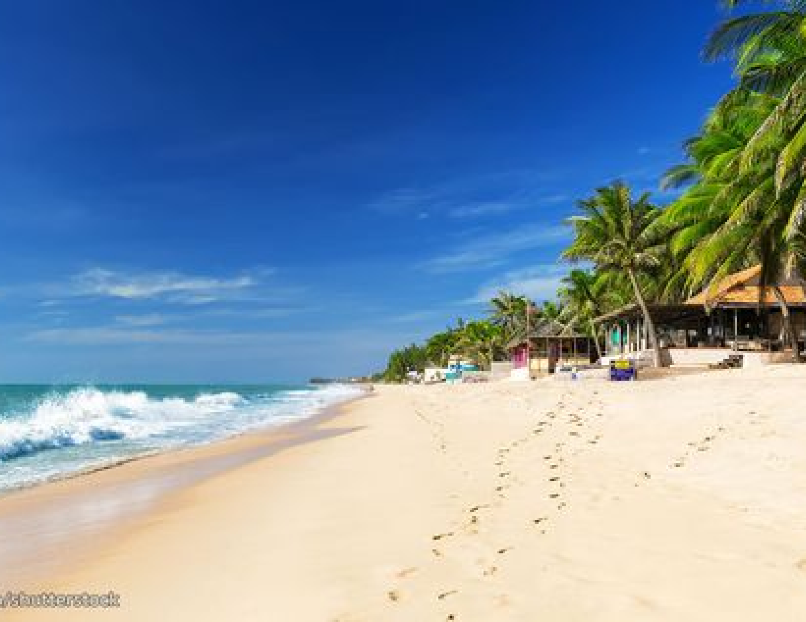

Phan Thiet
PHAN THIET
Phan Thiet is a coastal city in Central Vietnam, renowned for its beautiful beaches, lively fishing culture, and iconic sand dunes. A popular tourist destination, it offers a mix of natural wonders and cultural heritage. Visitors can indulge in fresh seafood, explore the striking red and white sand dunes of Mui Ne, and visit historic sites such as the Po Sah Inu Cham Towers.
Phan Thiết provides a perfect getaway for beach enthusiasts and travelers looking to experience Vietnam's authentic coastal charm.
UNMISSABLE ATTRACTIONS

Mui Ne
Mui Ne, near Phan Thiet, is a coastal paradise known for its sand dunes, clear waters, and palm-lined beaches. Popular for water sports like kite surfing, it attracts adventure seekers and sun lovers. Vibrant fishing villages and fresh seafood add to its laid-back charm, making Mui Ne a must-visit on Vietnam's southern coast.
Adress:
Phan Thiet City, Binh Thuan Province.
Flying Sand Dunes
Doi Cat Bay, also known as the Flying Sand Dunes, is one of Mui Ne’s most iconic natural attractions. Renowned for its constantly shifting red and white sand formations, this unique desert-like landscape offers visitors opportunities for sandboarding, dune buggy rides, or simply taking in the stunning views. The sand’s colors change throughout the day, creating a dynamic and mesmerizing setting that attracts photographers and adventurers alike.
Adress:
Phan Thiet City, Binh Thuan Province, Vietnam.
White Lake
Bau Trang, also known as the White Lake, is a stunning oasis surrounded by vast white sand dunes near Mui Ne. This unique destination features a freshwater lake nestled among the dunes, offering a peaceful contrast to the desert-like surroundings. Visitors can explore the area by ATV, enjoy sandboarding, or take a relaxing boat ride on the lake. The serene beauty of Bau Trang, with its shimmering waters and expansive dunes, makes it one of the most picturesque spots in the region.
Adress:
Ho Chi Minh Mausoleum, 2 Hung Vuong Street,
Ba Dinh District, Hanoi, Vietnam.
HIDDEN GEMS OF HANOI

PHAN THIET - WINE CASTLE - FLYING SAND DUNES - ANCIENT FISHING VILLAGE - RACH GIA CITY
5 days
Availability : Every day
1 people